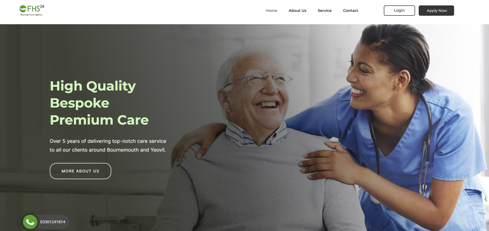

WordPress Projects

This category highlights projects where I have effectively utilized various WordPress plugins to accomplish the objectives of the projects, demonstrating my proficiency in leveraging these tools to achieve desired results.
Frendy Healthcare Service (FHS24)
 FHS24 is a reliable and professional home care service provider, founded in 2014 in Yeovil, Somerset. They deliver person-centered care, supporting individuals with unique needs. Their services range from live-in care to companionship. They have a robust recruitment process, ensuring competent staff provide safe care. They are registered with the Care Quality Commission (CQC), providing regulated personal care services. The company's vision is to support individuals in living independently in their communities.
FHS24 is a reliable and professional home care service provider, founded in 2014 in Yeovil, Somerset. They deliver person-centered care, supporting individuals with unique needs. Their services range from live-in care to companionship. They have a robust recruitment process, ensuring competent staff provide safe care. They are registered with the Care Quality Commission (CQC), providing regulated personal care services. The company's vision is to support individuals in living independently in their communities.
For FHS24, having a website is vital to extend its reach, deliver in-depth information about its services, and provide a user-friendly platform for potential clients to interact with the company. Furthermore, as FHS24 hires professional caregivers worldwide, the website becomes the key medium for applicants to access and utilize the available online application form.
Visit Official Site
Vee's Afro Hub - (still work in-progress)
Vee's Afro Hub is a unisex salon that specializes in transforming your look and elevating your style. They offer personalized grooming services, tailored to individual preferences. The salon boasts state-of-the-art facilities and a welcoming atmosphere, ensuring a delightful experience for all clients. Whether it's a chic haircut, vibrant color, or a complete makeover, their expert stylists deliver creativity and professionalism in a cozy, unique setting.
Visit Official Site